1.의뢰서 관리
이 화면은 보철물 의뢰 정보 확인 및 관리하는 화면으로 진행 현황 확인, 검색,상세 조회 및 의뢰서 수정이 가능합니다.
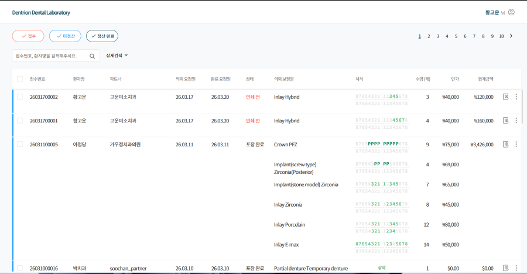
1-1.기능 설명
1-1-1. 의뢰 상태
의뢰서의 진행 단계를 표시합니다.
접수부터 정산 완료까지 단계별로 확인할 수 있으며, 선택한 상태의 의뢰서만 목록에 표시됩니다.
[접수]: 파트너에서 등록한 의뢰서로 제조소가 해당 의뢰서를 접수하기 전 상태입니다.
[미정산]: 보철물 제작을 진행 중인 상태입니다.
[정산 완료]: 발급 완료 거래명세서에 포함된 상태입니다.
1-1-2. 의뢰 상태별 상세 보기
상세 보기 버튼을 클릭하면 해당 의뢰서의 상세 내용을 확인할 수 있습니다.
의뢰서 상태에 따라 제공되는 기능이 달라집니다.
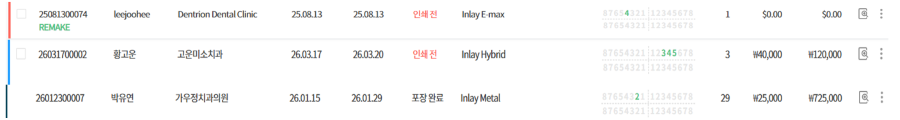
[접수]
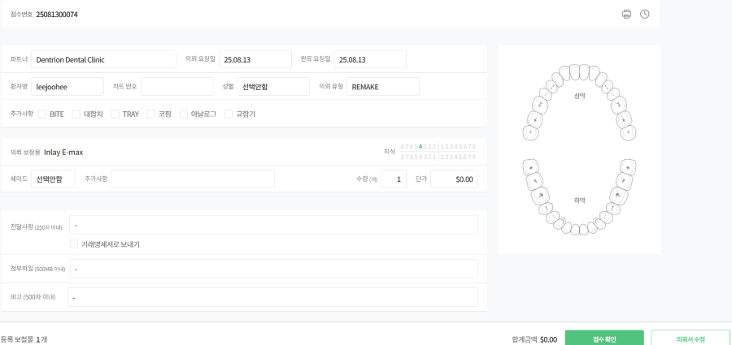
1.[의뢰서 인쇄] : 의뢰서 원본을 출력합니다.
2.[히스토리] : 의뢰서 수정 내역이 있는 경우, 수정 시점과 이전 의뢰서를 확인할 수 있습니다.
3.[접수확인] : 제조소에서 의뢰서 확인 후에 접수 처리를 할 수 있습니다.
4.[의뢰서 수정] : 해당 의뢰서를 수정합니다.
[접수 전] 상태의 의뢰서 수정
해당 의뢰서 수정은 모든 정보가 수정이 가능합니다.
[미정산]
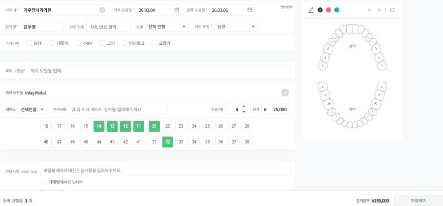
1.[의뢰서 인쇄] : 해당 의뢰서를 출력합니다.
2.[히스토리] : 의뢰서 수정 내역이 있는 경우, 수정 시점과 이전 의뢰서를 확인할 수 있습니다.
3.[포장 완료] : 보철물 제작이 끝난 후 버튼을 클릭하면 클릭한 일자로 포장 완료 처리됩니다.
4.[의뢰서] : 해당 의뢰서를 수정합니다.
[미정산] 상태의 의뢰서 수정
해당 의뢰서 수정은 모든 정보가 수정이 가능합니다.
[정산 완료]
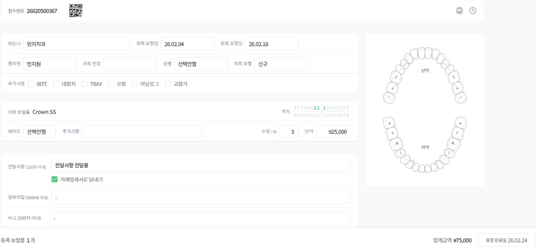
1.[의뢰서 인쇄] : 해당 의뢰서를 출력합니다.
2.[히스토리] : 의뢰서 수정 내역이 있는 경우, 수정 시점과 이전 의뢰서를 확인할 수 있습니다.
3.[포장완료일] : 포장 완료 처리한 날짜가 표시됩니다.
1-1-3. 의뢰서 인쇄폼
의뢰서를 A4 용지에 출력할 수 있습니다.
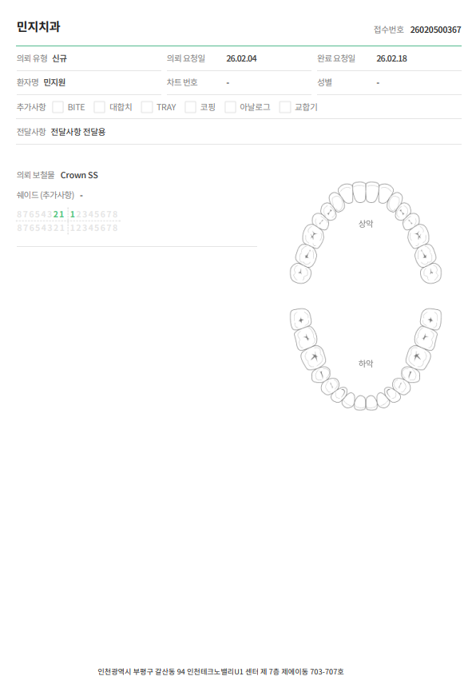
1-1-4. QR code 인쇄
QR code를 라벨 프린트기로 출력할 수 있습니다.
QR code 인쇄 예시
1.[QR code] : 의뢰서 정보가 담겨져 있는 QR code를 출력 가능하며 접수번호, 파트너명, 환자명, 의뢰 유형 정보를 확인 가능합니다.
2.[이름표] : 해당 QR code의 환자명 네임텍을 동시에 출력 가능합니다.
3.[인쇄 상태] : 인쇄 전, 인쇄, 포장 완료 상태 단계로 분류됩니다.
QR code 사용
작업 공정 스캔
(태블릿)
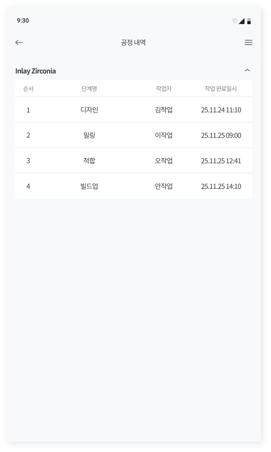
(웹)
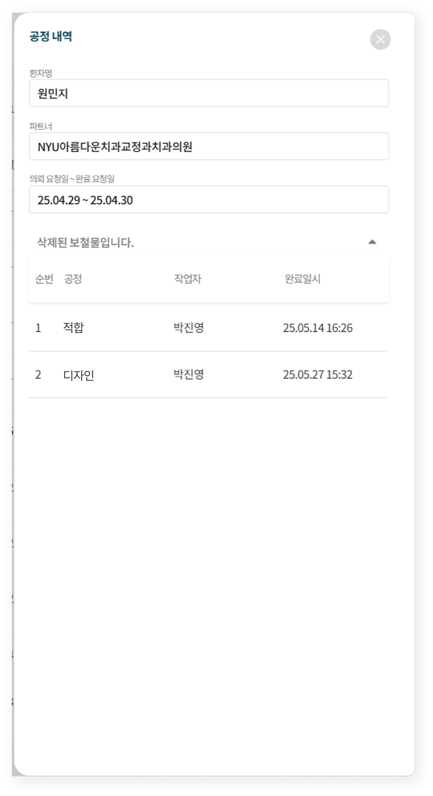
출고 완료 스캔
QR code를 스캔하여 빠르고 정확한 포장 완료 처리가 가능합니다.
파트너별 파우치의 고유 QR code를 이용하여 파우치에 포장 완료된 의뢰 목록을 확인할 수 있습니다.
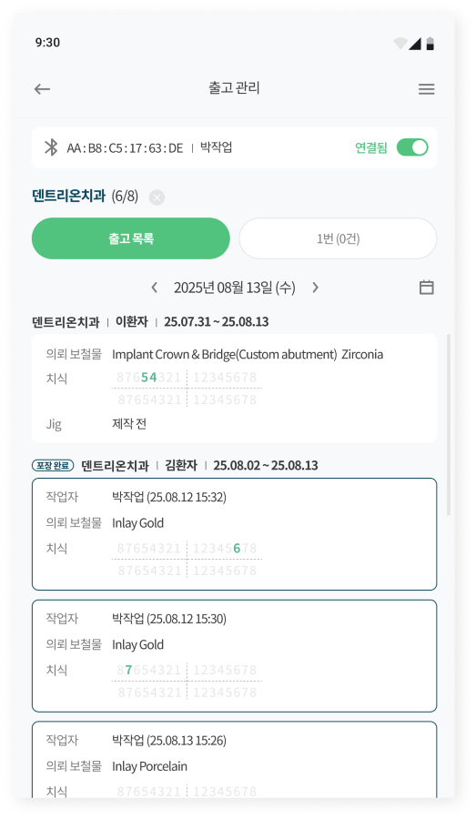
1-1-5.더보기
상세 보기 하지 않아도 목록 화면에서 바로 원하는 기능을 사용할 수 있습니다.
[접수]
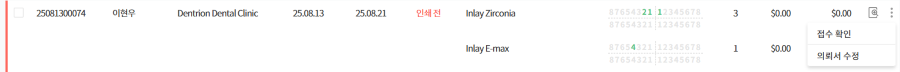
1.[접수 확인] : 제조소에서 의뢰서 확인 후에 접수 처리를 할 수 있습니다.
2.[의뢰서 수정] : 해당 의뢰서를 수정합니다.
[미정산]
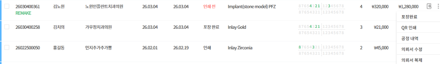
1.[포장 완료] : 보철물 제작이 끝난 후 버튼을 클릭하면 클릭한 일자로 포장 완료 처리가 됩니다.
2.[QR 인쇄] : QR code 인쇄 팝업창으로 즉시 연결됩니다.
3.[공정 내역] : 작업자가 스캔한 작업 공정을 확인할 수 있습니다.
4.[의뢰서 수정] : 해당 의뢰서를 수정합니다.
5.[의뢰서 복제] : 기존 의뢰서를 복제하여 수정이 가능합니다.
[정산 완료]
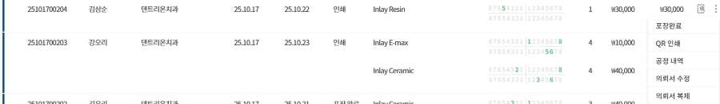
1.[QR 인쇄] : QR code 인쇄 팝업창으로 즉시 연결됩니다.
2.[공정 내역] : 작업자가 스캔한 작업 공정을 확인할 수 있습니다.
3.[의뢰서 수정] : 해당 의뢰서를 수정합니다.
4.[의뢰서 복제] : 기존 의뢰서를 복제하여 수정이 가능합니다.
1-1-6.검색
접수 번호 또는 환자명으로 원하는 의뢰서를 빠르게 조회할 수 있습니다.
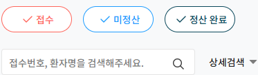
1-1-7. 상세 검색
상세 검색으로 원하는 의뢰서를 조건별로 조회할 수 있습니다.
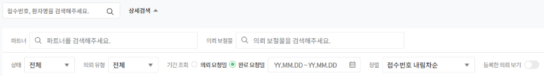
1. [파트너] : 선택한 파트너 의뢰만 조회할 수 있으며, 다중 선택을 지원합니다.
2. [의뢰 보철물] : 선택한 보철물 의뢰만 조회할 수 있으며, 다중 선택을 지원합니다.
3. [상태] : 인쇄 전, 인쇄, 포장 완료 의뢰 상태별로 조회가 가능합니다.
4. [의뢰 유형] : 신규, REMAKE, REPAIR, ETC 의뢰 유형별로 조회가 가능합니다.
5. [기간 조회] : 의뢰 요청일 또는 완료 요청일 중 선택된 기준으로 기간을 설정하여 해당 기간 등록된 의뢰서만 조회할 수 있습니다.
6. [정렬] : 의뢰서 목록의 보기 정렬을 선택할 수 있습니다.
7. [다운로드] : 조건을 하나라도 선택 시 다운로드 버튼이 생성되고, 엑셀 파일로 의뢰 목록을 다운로드 받을 수 있습니다.
[다운로드] 엑셀 파일 예시
1-1-8. 체크 박스
같은 상태의 의뢰서만 다중 선택 가능하며, 선택한 상태에 따라 제공되는 기능을 일괄 처리할 수 있습니다.
[정산 완료] 상태의 의뢰는 체크 박스 기능이 제공되지 않습니다.
[접수]
[접수] 상태의 의뢰서를 선택하면 선택된 수량이 표시되며 접수 확인 및 의뢰서 인쇄, 의뢰서 삭제를 일괄 처리할 수 있습니다.
선택 해제 버튼을 클릭하면 선택된 의뢰서가 모두 해제됩니다.
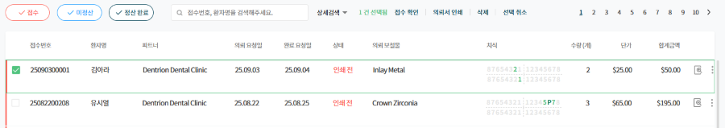
[미정산]
[미정산] 상태의 의뢰서를 선택하면 선택된 수량이 표시되며 의뢰서 인쇄, QR code, 포장 완료, 의뢰서 삭제를 일괄 처리할 수 있습니다.
선택 해제 버튼을 클릭하면 선택된 의뢰서가 모두 해제됩니다.
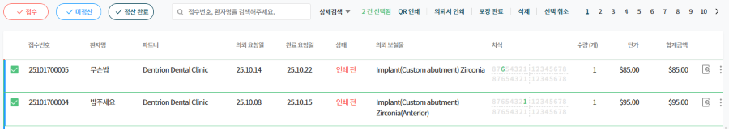